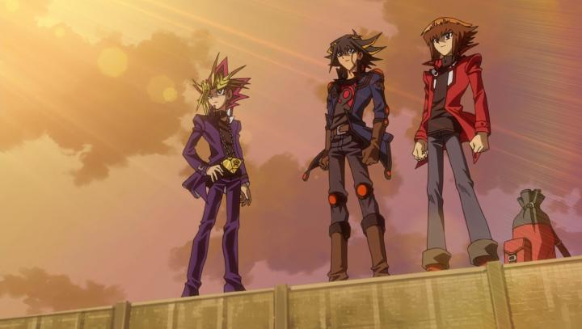

Disclaimer: This review covers both "Yu-Gi-Oh! - The Movie" (also known with the subtle "Pyramid of Light"), and "Yu-Gi-Oh! - Bonds Beyond Time," released in 2004 and 2010 respectively, with runtimes of 90 and 50 minutes.I grew up to be in the exact target audience for the "anime to market toys" craze from the late 90's to early 00's. This started with Pokemon (expertly synergized with video games, trading cards, and other merchandise), then Digimon (with digital pet toys), Beyblade (spinning tops), and Yu-Gi-Oh! (playing cards). I was roughly 6 - 10 years of age as these flooded Saturday-morning and after-school television. Of the four, I perhaps liked Yu-Gi-Oh! the most, even though I barely played the physical card game. However... Pokemon and Digimon had generation-defining theatrical films acting as capstones to the original storylines, and I saw and loved them. So did Yu-Gi-Oh!, but it came relatively late in 2004, by which point television broadcasts in North America lapsed a bit, and by which point I had started to outgrow the genre. This is to say, I did NOT see "Yu-Gi-Oh! - The Movie" when I was young.Fast-forward about two decades, and I've grown nostalgic for the series. The movies, now distributed directly by Konami and Cineverse in North America, were getting frequent re-releases, including a DVD trilogy pack of "The Movie" (2004), "Bonds Beyond Time" (2010), and "The Dark Side of Dimensions" (2016). I'd prefer a Bluray, but for the price, and given the quality of the movies, DVD would do. I'm reviewing the first two movies here (due to the significant difference in quality for "Dark Side," that's covered in a separate review). If you've never watched "Yu-Gi-Oh!"... it's safe to just ignore these movies altogether. The series treated the card game as a legendary sport based on an ancient game played by Egyptian pharaohs. In the modern day, a young boy named Yugi unlocks the spirit of a pharaoh, a great game player, from an ancient puzzle, and they have adventures playing the card game to save the world and win the championship. It's all silly nonsense about "the heart of the cards" and "the power of friendship," but as a kid's show, the series is effective. You'd never expect that watching two fictional players play cards, sometimes across multiple episodes for a single game, would be entertaining, but it was always riveting, and since they often spell out and repeat what their cards do, it always somehow made sense. "The Movie" acts as a standalone adventure after the events of the series, specifically after the "Battle City" arc. After a brief prologue, we see Yugi after having won the Battle City Championship, and dealing with his new-found fame as a top duelist. Seto Kaiba, his rival, is obsessed with finding a way to beat Yugi and his newly acquired (and seemingly invinsible) Egyptian God cards. During all this, a new Egyptian history exhibit holds the mummy of the Pharaoh's nemesis Anubis, and Kaiba's obsession inadvertently sets to bring him back to complete his plans to destroy the world. It's all fine, and the (approximately) two main duels are fun to watch (I was pleased to see Maximillion Peagasus again), but ultimately feels like just an extended television episode, albiet a good one.  "Bonds Beyond Time" is more like a glorified OVA, and was produced after the spin-off shows 'Yu-Gi-Oh! GX" and "Yu-Gi-Oh! 5D's" released. The latest hero, Yusei, ponders the history of his city, when a mysterious duelist challenges him, and he then recognizes history has changed from what he remembered. Jaden and Yugi have similar battles with the time-hopping duelist, and ultimately meet and duel together to defeat him. Basically, this is an excuse to bring the heroes of the three anime together. Again, it feels like an extended television episode, and perhaps a special one given the crossover, but not a particularly good one in terms of story, and with the caveat that you do need some familarity with THREE shows, especially "5D's." The film ends with a sweet message of "playing games together," clearly a celebration of the fans that grew up with the game, but further suggesting this movie was just a marketing tool. Feature films are usually an excuse to elevate production values from the original television budget, but that's not the case here. "The Movie" looks indistinguishable from the anime, which at best could be described as "economical." There's a lot of flat and still shots. "Bonds Beyond Time" is slightly better with the use of 3D models for monsters and effects, but this is also basically on par with the "5D's" television output from the time. Basically, the animation is poor and is a disappointment, but is true to the television series. Character designs are distinct from any other cartoon, with things like wild colourful hair and belts in places they don't belong... it looks weird in hindsight, but always seemed cool at the time. "The Movie," interestingly, has a extensive American soundtrack of pop songs for the American release, much like "Digimon - The Movie" had... except most of the songs don't really appear in the movie. They play in the credits instead, for about 20 seconds each, to make room for every song. A big part of the nostalgia is having the 4Kids English dub, and the television's voice actors are all back for the movie. From the start, and even decades later, Dan Green and Eric Stuart are popular dub actors at conventions, even with a very limited career outside "Yu-Gi-Oh!". Their performances here are on par with the series. And that's the repeating theme of this review. "Yu-Gi-Oh! - The Movie" and "Bonds Beyond Time" fit right in with the television series, and on a big screen over a longer runtime, their flaws are more obvious. For dedicated fans, and perhaps children with tolerance towards those details, it's not a big deal, and just watching the characters again is as fun as the show was. It just feels like a missed opportunity is all, especially at the tail-end of the anime-for-toys era. As for buying this on DVD, perhaps the first DVD-only release I've bought in years as of 2025... I don't have regrets here. Yes, there are some busier scenes with artifacting, but these are few and far between, and the films, particularly "The Movie," looks surprisingly sharp in most secnes. And on a modern TV, the resolution reminds me a lot of how I remembered the TV series on broadcast. Anyway, for these movies, a Bluray is wholly unnecessary.
- "Ani" More reviews can be found at : https://2danicritic.github.io/ Previous review: review_Yu-Gi-Oh_-_The_Dark_Side_of_Dimensions Next review: review_Yuri_on_Ice